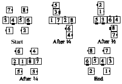

From diamonds: All dancers will do 4 Circulates. If at the beginning of any Circulate they are one of the very centers, they do an Interlocked Diamond Circulate. Otherwise they do a Diamond Circulate. The right-shoulder rule does not apply to this call: After a dancer has done the Interlocked Diamond Circulate, he passes outside any dancer from the other diamond. For Exchange the Diamond 1/4, 1/2, and 3/4, dancers do 1, 2, or 3 Circulates, giving the results shown below. e.g.

© Copyright 1983, 1986-1988, 1995-2011 Bill Davis, John Sybalsky and CALLERLAB Inc., The International Association of Square Dance Callers. Permission to reprint, republish, and create derivative works without royalty is hereby granted, provided this notice appears. Publication on the Internet of derivative works without royalty is hereby granted provided this notice appears. Permission to quote parts or all of this document without royalty is hereby granted, provided this notice is included. Information contained herein shall not be changed nor revised in any derivation or publication.